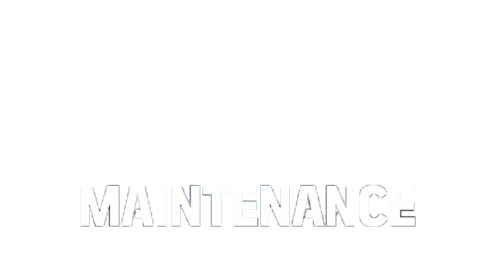
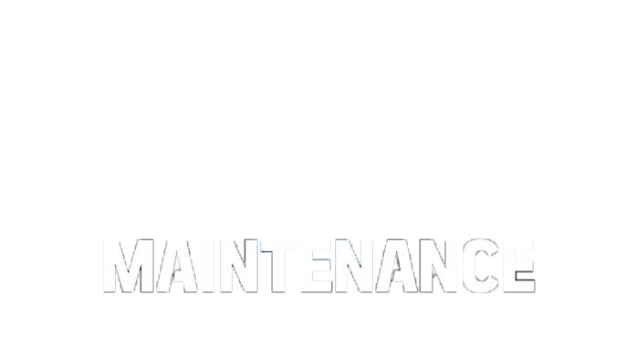
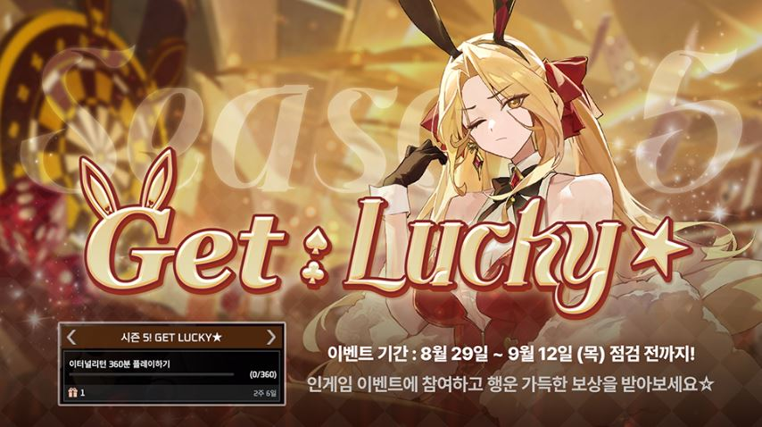

실험체
무기
방어구
소모품
특성
설치
전술스킬
회복
지역
개울, 경찰서, 고급주택가,골목길, 공장, 모래사장 등
야생동물
곰, 늑대, 들개,멧돼지, 박쥐, 위클라인
 

서버
점검
안내
ER패스 "럭키★"
ER 패스는 1,250NP로 구매할 수 있으며, 출시 기념 할인으로 3주 간 890NP에 판매됩니다.
럭키★ 패스 포함 스킨 3종
퍼펙트샷 바니 리오(영웅), 언럭키 바니 니키(희귀), 럭셔리 바니 제니(희귀) 스킨을 만나보세요.l
ER 패스 체인지 종료
사전에 예고된 것과 같이 9월 5일 목요일 1.29.1 업데이트 이후 두 시즌 동안 운영되었던 ER 패스 체인지가 종료됩니다.
시즌 5 시작
시즌 5 랭크 대전이 시작됩니다.

시셀라
전 세계에 백 명밖에 없는 난치병 환자. 아주 어릴 때 판정을 받았고, 그때부터 병원생활을 시작했다. 늘 극도의 고통 속에서 살았으며, 자살시도도 수없이 했지만 쉽게 죽지 못했다.
의료계에서도 매우 희귀한 케이스라 진료비 전체와 최첨단 치료를 지원해주고 있으나, 그녀에게는 자신의 몸을 가지고 실험을 계속하기 위해 살려주는 걸로만 비춰졌다.
표정이 없고 말수도 적다. 어릴 때 부터 해온 병원생활로 친구가 없어, 스스로 그린 표정들에게 이름을 붙이고 대화한다. 사람들과의 대화를 낯설어 하고 있다.
명대사
나딘
4살 때 폭우로 인한 산사태로 부모님을 잃고, 자신을 구해준 짐승들과 함께 8년동안 살다가 한 사냥꾼에게 발견되어 이후 인간으로서의 삶을 시작한다.
본명 : 나딘 찬드라위나타
프리야
프리야의 노래에는 신비한 힘이 있다. 선율에 따라 식물들이 무성히 자라난다. 때문에 프리야는 높은 담장 속에 갇혀 지냈다. 겨우 동경을 누르고, 이해하려 하면서.
본명 : 프리야 판데이
레녹스
정장을 입은 채 늘 같은 자리에 앉아있는 낚시꾼. 멀리서도 들리는 호쾌한 웃음소리와 팔에 드러난 독특하고 화려한 문신 때문에 상당히 눈에 띈다. 평범하지 않은 과거가 있어 보이지만 본인은 그저 평범한 낚시꾼이라며 열심히 부정하는 중. 항상 여유로운 태도로 웃고 있지만, 등에 난 흉터에 대해 물어보면 표정이 어두워 진다.
본명 : 레녹스(가명)
이벤트
시즌5! GET LUCKY★ 이벤트 미션
안녕하세요. 루미아 섬의 생존자 여러분!
시즌5! GET LUCKY★ 이벤트 미션 이벤트가 진행됩니다.
이벤트 기간 8월 29일(목) 점검 후 ~ 9월 12일 점검전까지,
[이터널 리턴 360분 플레이] 미션을 완료하면 럭키★ 팀 슬롯 배경을 드립니다.
인게임 이벤트 미션 달성하고 선물 받아가시길 바랍니다.